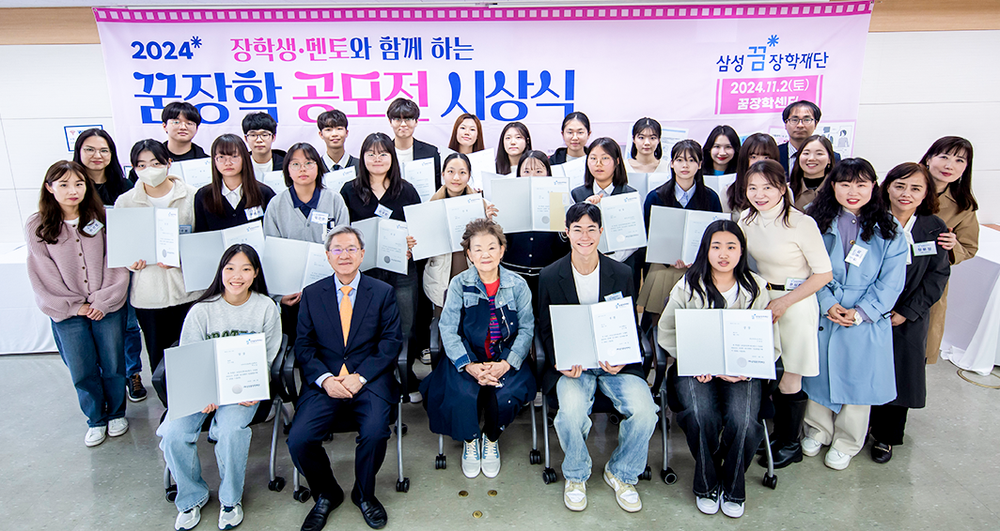

삼성 꿈 장학재단이
희망과 가능성이 가득한 세상을 약속합니다.
samsung Dream Scholarship Foundation
꿈을
지원합니다
삼성 꿈 장학재단은 멘토링 프로그램을 통해 성장의 기회를 제공하며,
교육을 통해 사회에 긍정적인 변화를 이끄는 인재 양성을 목표로 합니다
-
멘토링
꿈장학사업학생들이 멘토 선생님의 교육적, 정서적 지지를 받으면서 자신의 꿈을 찾고 재능을 개발할 수 있도록 장학금을 지원하는 사업
자세히보기 -
청소년
치아교정 사업재단 꿈장학생 중 치아교정이 필요하나 가정형편으로 인해 적절한 치료를 받지 못한 청소년에게 무료 치아교정의 기회를 제공하는 사업
자세히보기 -
특별사업
재단 장학생들에게 다양한 기회를 제공하고 사회전반에 교육복지 인식을 확산하고자, 여러 기관들과 연계하여 더 많은 아이들에게 교육복지 혜택을 지원하는 사업
자세히보기 -
글로벌
장학사업역사적 상황으로 불가피하게 흩어진 한인후손과 개발도상국 현지 아동 · 청소년을 교육적으로 지원하고,자국의 발전을 이끌 수 있는 글로벌 리더로 양성하는 사업
자세히보기 -
배움터
교육지원사업사회경제적 이유로 교육지원이 부족한 아동, 청소년을 위하여 지역의 다양한 배움터들이 협력하여 교육프로그램을 운영하고 구축할 수 있도록 지원하는 사업
자세히보기
장학 및 재단의
주요소식
장학사업과 관련된 주요 소식을 전해 드립니다.
별길을 찾다*
-
멘토링 꿈 장학사업
장학생 스스로의 힘을 이끌어낼
‘멘토링 소통법’을 배우다지난 11월 2일(토), 재단 꿈장학센터에서 ‘장학생·멘토와 함께하는 2024 꿈장학 공모전 시상식’이 열렸다. 이날 행사는 인사말씀과 수상자 시상, 심사 총평, 수상자 소감 발표, 최우수 영상 상영 순으로 진행됐으며, 재단의 정기영 이사와 우진중 사무총장, 신달자 심사위원장을 비롯해 멘토 선생님과 장학생 수상자, 가족 등이 함께했다.
-
멘토링 꿈장학사업

장학생 스스로의 힘을 이끌어낼
‘멘토링 소통법’을 배우다삼성꿈장학재단은 지난 10월 17일 대한상공회의소에서 ‘2024 배움터 교육지원사업 사례나눔 워크숍’을 진행했다. 이번 워크숍은 재단 이광호 이사의 인사말을 시작으로 개회 및 포럼, 2025년 배움터 교육지원사업 공모 안내, 사례나눔 및 워크숍 순으로 진행됐다. 먼저 이광호 이사는 아이들의 미래를 밝혀나가는 선생님들에게 감사의 마음을 전하며, “합창의 하모니를 통해 협력을 배운 아이들, 지역사회와 함께 성장하는 아이들 등 선생님들의 따뜻한 손길과 헌신적인 노력 덕분에 아이들이 자신의 꿈을 펼치고 세상을 향해 나아가는 용기를 얻었을 것이라 믿는다.”라고 말했다. 또한, “오늘 포럼을 통해 이주배경 아동·청소년의 현황을 함께 살펴보고, 이 학생들을 어떤 관점에서 만나면 좋을지도 함께 고민해보는 시간이 되었으면 좋겠다.”라고 전했다.
-
리더육성 장학사업

나눔의 땀방울로 반짝이던 우리의 여름
삼성꿈장학재단은 ‘2024 배움터 청소년 창작곡 밴드대회’를 11월 2일 토요일에 서울생활문화센터 서교스퀘어에서 개최했다. 올해 처음 진행된 이 대회는 배움터 청소년 밴드팀의 성장을 확인하고 청소년 창작 문화의 확산에 기여하기 위해 마련됐으며, 전국 각지 배움터의 총 17개 밴드팀 중 1차 영상심사를 통과한 총 8개의 청소년 밴드팀이 자작곡을 가지고 참여했다. 또한, 심사위원으로 인디밴드 ‘브로콜리너마저’의 멤버 윤덕원 님과 정경운 전남대학교 교수가 참석해 가사 전달력, 곡의 정서, 팀워크 등을 기준으로 공정하게 평가했다.
-
글로벌 희망장학사업
글로벌 희망장학생들이 함께
만들어갈 꿈의 시너지삼성꿈장학재단은 ‘2024년 꿈장학 진로발표대회’를 10월 26일 토요일에 재단 연수실에서 개최했다. 이번 대회는 스스로 진로 계획을 수립하고 발표하는 경험을 통해 장학생들에게 적극적인 진로탐색·개발과 표현의 기회를 제공하기 위해 마련됐으며, 서류 심사를 통과한 꿈장학생 23명이 발표자로 참여했다. 또한, 오정숙 교수(대구대학교)와 정경운 교수(전남대학교)가 심사를 맡아 진로 탐색·계획의 구체성, 발표능력, 발표태도, 성장가능성 등을 기준으로 평가했다.
-
배움터 교육지원사업

‘함께’의 힘을 아는
청소년들의 다채로운 교류 현장삼성꿈장학재단은 ‘2024 교육소외 아동·청소년 종단연구 논문공모 결과 발표회’를 지난 10월 11일 재단 연수실에서 개최했다. 이번 행사는 재단이 수집한 장학사업 데이터를 바탕으로 교육소외 아동·청소년 대상 장학사업의 효과를 분석하고 발전 방안을 모색하기 위해 마련됐다. 행사에는 논문공모에 참여한 전문 연구자와 대학원생 14팀 및 재단 임직원들이 참석했으며, 대학원생 논문 발표 및 시상, 주제별 전문 연구자 논문 발표순으로 진행됐다. 먼저, 사회를 맡은 서울교육대학교 김성식 교수의 진행에 따라 대학원생 논문대회에서 1차 심사를 거쳐 우수 논문 대상자로 선정된 4팀의 발표와 시상이 이어졌다. 심사를 맡은 이화여자대학교 신태섭 교수는 “올해는 이전 연도에서 많이 연구되지 않았던 대상들을 분석하는 의미 있는 시도가 이뤄졌다.”라며, 어려운 데이터를 가지고 전문성을 살려 연구 문제를 도출하고 분석한 대학원생들을 격려했다.